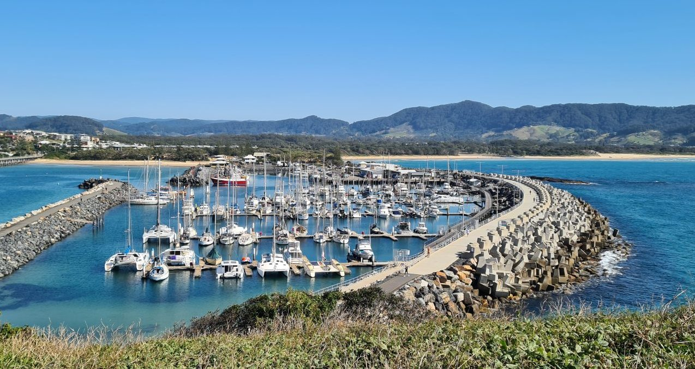

About the Creator
Synopsis
I was born in Coffs Harbour on the 30th of May, 1997.
My german mother ensured a multi-lingual upbringing and the benefit of multiple passports made me yearn to use them, which was my main goal after completing secondry education in Coffs Harbour.
My childhood interests can be summed up with sports, trying almost every sport but having to limit myself to basketball, rowing, downhill skateboarding and surfing.
When I finished school, I focused on travelling up until the pandemic.
Covid brought me back to Australia, choosing to base myself down the road from where I grew up, in the Mullumbimby Area.
Schooling and Career
Education
I put my all into Highschool, finishing with 2 Band 6 results and an ATAR just shy of 90.
Tertiary education made me feel disinfranchised. I struggled with Melbourne University's student support and certain Faculty Heads. Leading me to try other things.
Following is a list of establishments and dates:
- Bishop Druitt College, Coffs Harbour: 2009-2015
- Commerce at University of Melbourne: 2017-2018
- Design at University of Melbourne: 2018-2019
Odd Jobs
In between and following my education, I travelled a lot, following seasons and trying a plethra of roles. I started surfing from a young age and picked up teaching quickly, following summers and instructing for 2 years. I tried a snow season in Thredbo after Surf-instructing, exchanging teaching for pulling lifts for a change in seasons.
Following is a list of previous employers and a general timeline:
- Lift Attendant, Thredbo Kosciuszko Pty Ltd, Thredbo: 2019
- Sales Assistant, Dan Murphys, Brunswick East: 2017-2019
- Surf Teacher, The University of Melbourne Surf Club: 2017-2019
- Surf Teacher, Wavetours Surfcamps, France: 2016-2017
- Fit Technician, The Athletes Foot, Coffs Harbour: 2013-2016
Construction
In the last 4 years, I've had an array of roles in the construction industry, based around Byron Bay.
My induction to the industry, was under the Stonemason, doing anything to do with landscaping and stonework.
Since then, I've worked alongside carpenters, renovating some of the expensive real-estate in the Byron Shire.
Following is a list of previous employers and a general timeline:
- Formwork Carpenter, Knipe Concreting, Byron Bay: 2023
- Carpenter, Byron & Beyond Fencing, Byron Bay: 2022-2023
- Builders Assistant, Lakshmi Pty Ltd, Byron Bay: 2022
- Labourer, Glen Scheibe Stonemasonry, Mullumbimby: 2020-2022